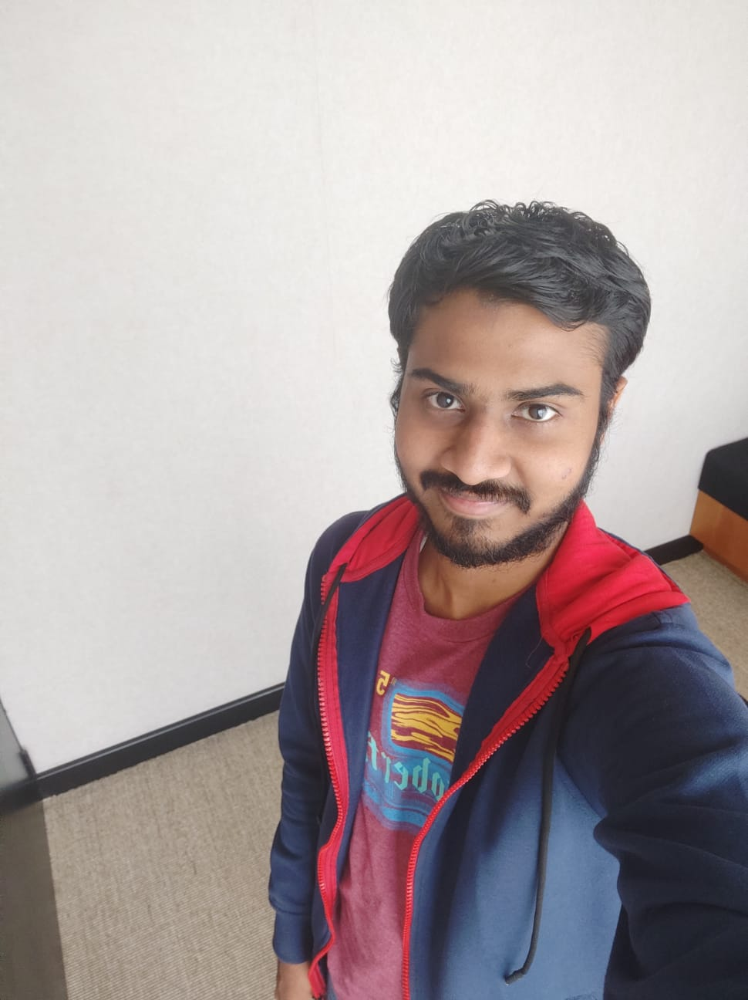

Production LLM Copilots
Built a GenAI copilot for Interactive Review Listing that reduced clinical query-build time by 75%.
Senior Generative AI Engineer / Clinical LLM Systems
I build production LLM systems for clinical and life-sciences workflows: GenAI copilots, RAG pipelines, fine-tuned models, prompt systems, and backend services that make AI usable inside real product constraints.

About
My name is Ahamed Musthafa R S. I am a Senior Generative AI Engineer in Coimbatore with 7 years of software engineering experience, including 3+ years building production LLM solutions for clinical and life-sciences teams.
My current work centers on GenAI copilots, RAG pipelines, prompt engineering, LLM fine-tuning with Hugging Face, and backend integration with Python, Django, AWS, and clinical data workflows.
Built a GenAI copilot for Interactive Review Listing that reduced clinical query-build time by 75%.
Fine-tuned open-source LLMs with LoRA on synthesized datasets to classify logically discrepant features with 80%+ accuracy.
Designed model service interfaces and configurable rule engines that helped reduce integration time by about 50%.
GenAI Stack
I design LLM assistants that replace complex manual clinical review flows with guided natural-language inputs and reliable backend orchestration.
boot: genai portfolio online
Selected Work
Production GenAI copilot using LLM APIs and advanced prompting to accelerate clinical query-build workflows by 75%.
AI-based decision agent for shopping and travel using TinyFish WebAgent API, Gemini, and ElevenLabs voice search.
RepositoryAI chatbot that generates targeted questions and answers for a job role or technical skill.
RepositoryContact